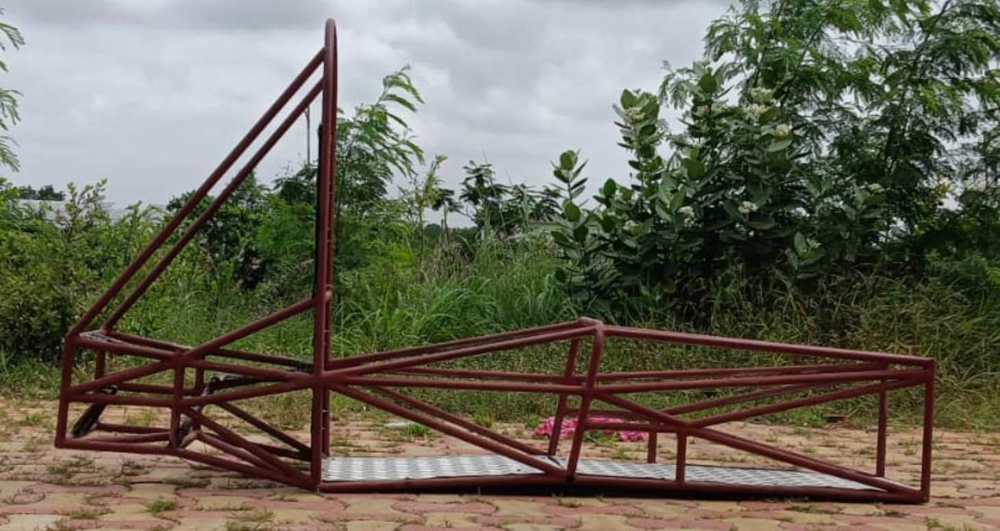
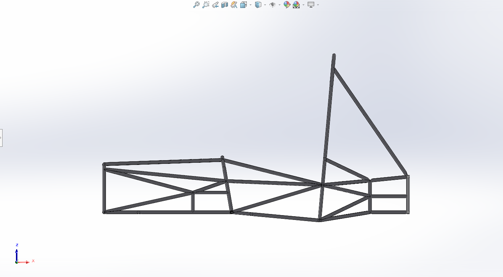
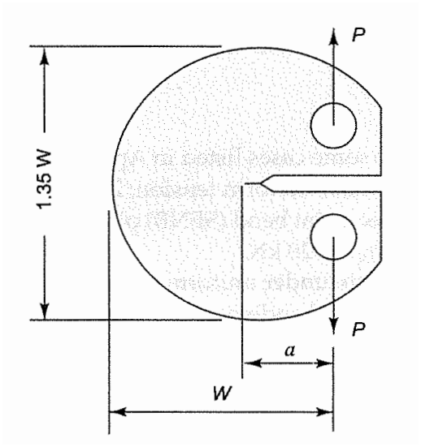
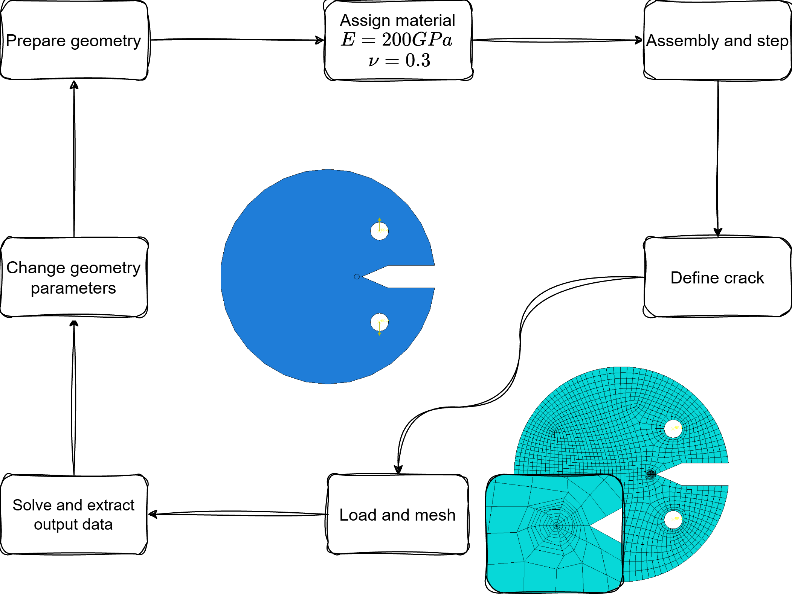
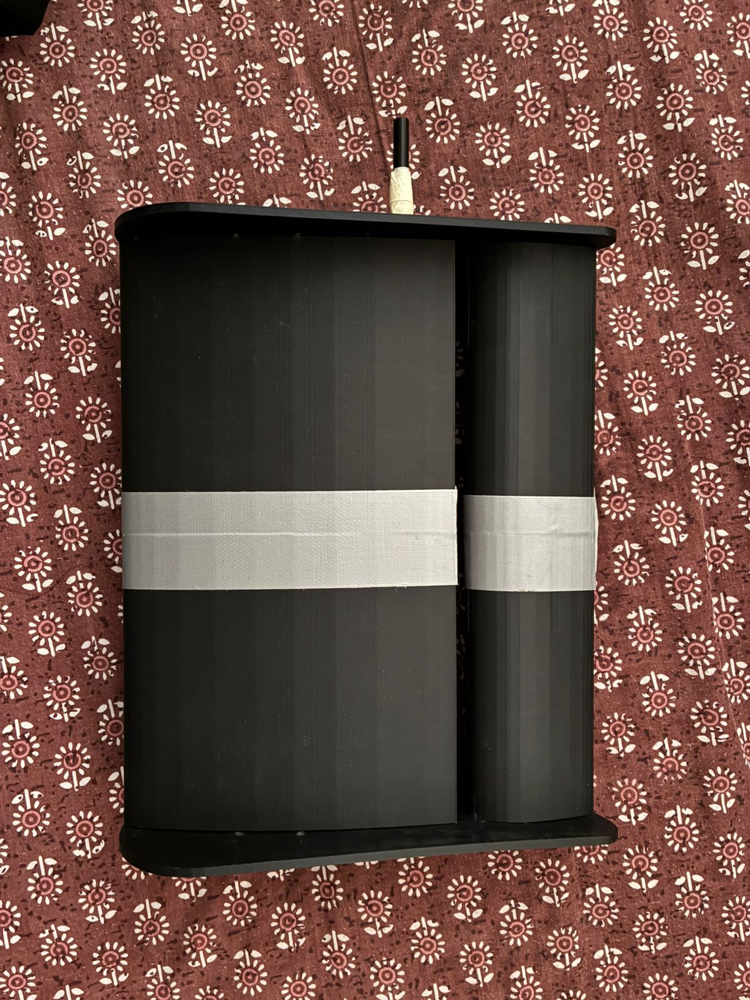
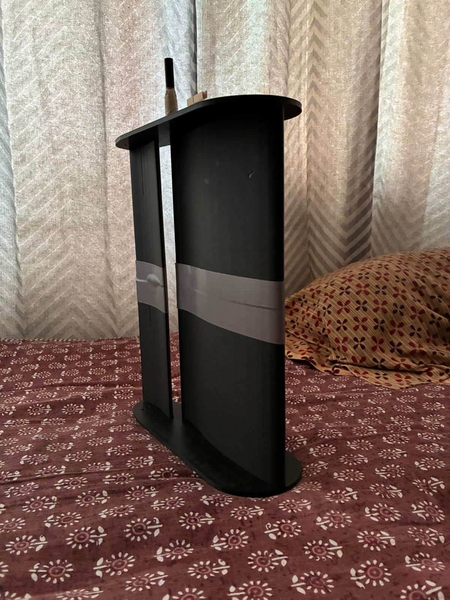
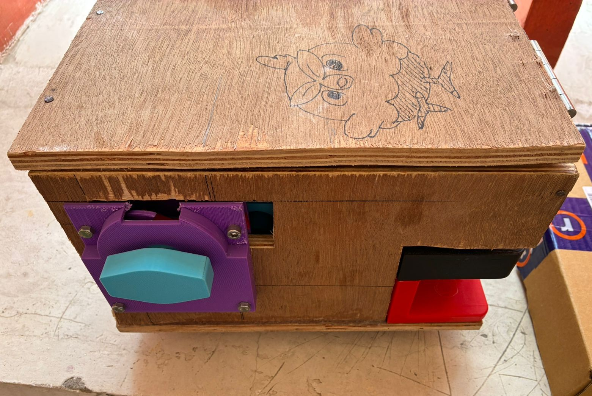
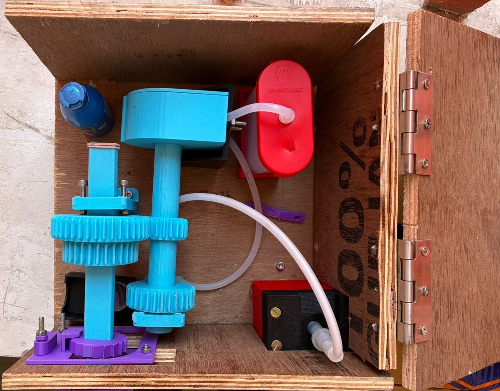

Formula SAE
Aeolus Racing IIT Hyderabad
I led a team of five students to design a chassis with safety and regulatory considerations. The design and FEA simulation of the chassis was done using SolidWorks. We participated in Supra SAE India 2025 - unfortunately our chassis was found to violate several rules, and therefore we did not get the Technical Inspection stickers.
Project highlights
- Dimensions: TBA
- Used AISI 1010 steel for the frame, welded using MIG welding process
- Torsional stiffness of ~1150 N-m/deg
- Deformation of less than 4mm on a simulated 3g load
Future improvements
- Regulatory compliance
- Ansys for simulations
- Simulation of brackets holding harness, battery, and especially suspension mounts
- Incorporation of welds in the geometry
- Ergonomics rig for driver positioning and comfort evaluation
Photos


Fracture mechanics term project [ME5610]
We were tasked with building a surrogate ML model to reduce dependency on simulatons (and hopefully experiment) for determining the geometric factors in the calculation of the stress intensity factor (SIF) of a disc shaped compact trnsion specimen (DCT)
The project was done in pairs, consisting of two parts
- Automating simulations and extraction of data using Abaqus scripting capabilities
- building the surrogate model for geometric factor prediction
I worked on the automation of the simulations, writing a script for simulating 800 instances of the specimen, changing crack length and notch angle. The mesh used quad elements and had Barsoum elements around the crack tip to capture the stress singularity.
The ML model used polynomial regression as the SIF depended only on the crack length.
Photos


Inter-IIT Tech Meet 2025
I participated in the high-prep problem statement posed by LAT Aerospace, where we were challenged to design a high-lift wing concept to achieve a
- maximum lift coefficient of at least 6.5
- minimum lift-drag ratio of 5 at takeoff and 20 at cruise.
I worked on the CFD validation of the airfoil along with two other members, setting mesh geometry near and beyond the airfoil and performing a mesh convergence study. The final design was an albatross-inspired biomimetic wing. We placed fourth out of twenty-three participating IITs in the problem statement.
Photos


Mini-project [ME3425]
The goal of the course was to create a product which involved applying concepts learned in class which, preferably solved a problem.
My group settled on a gumball machine inspired peristaltic pump, intended to dispense fluids such as laundry detergent.
The prototype was demonstrated using water.
Photos

